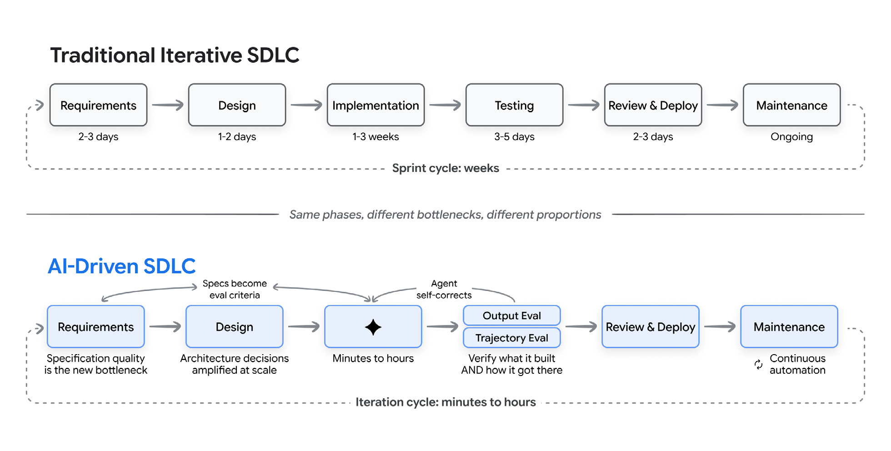
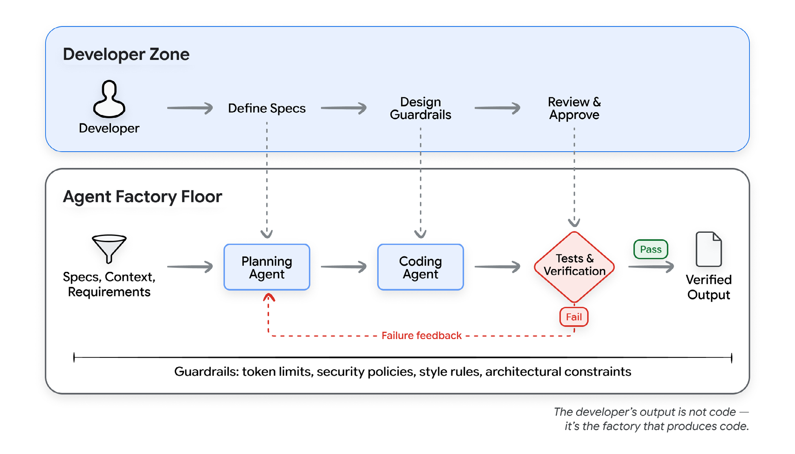

SOFTWARE ENGINEERING · 2026
SDLC
從傳統開發流程
到 AI-assisted SDLC
本週學習目標
軟體開發流程
- ‧認識現代 Web 應用部署平台。
- ‧理解 SDLC 的主要活動與生命週期。
- ‧認識 Waterfall、Agile 與 Scrum。
- ‧理解 AI-assisted SDLC 與 Coding Agent 的角色。
實作練習
- ‧透過 GitHub Issues 選擇需求，與 Coding Agent 協作產生實作計畫。
- ‧使用 Coding Agent 改善既有系統。
抽獎系統架構與資料流
使用者
Google Forms

Google Sheets
報名資料

GitHub Pages
GAS API
畫面請求 / 資料回應
現代 Web 應用部署平台
| 架構 |  Vercel Vercel | ![](data:image/svg+xml,%3csvg%20viewBox='0%200%20256%20116'%20xmlns='http://www.w3.org/2000/svg'%20width='256'%20height='116'%20preserveAspectRatio='xMidYMid'%3e%3cpath%20fill='%23FFF'%20d='m202.357%2049.394-5.311-2.124C172.085%20103.434%2072.786%2069.289%2066.81%2085.997c-.996%2011.286%2054.227%202.146%2093.706%204.059%2012.039.583%2018.076%209.671%2012.964%2024.484l10.069.031c11.615-36.209%2048.683-17.73%2050.232-29.68-2.545-7.857-42.601%200-31.425-35.497Z'/%3e%3cpath%20fill='%23F4811F'%20d='M176.332%20108.348c1.593-5.31%201.062-10.622-1.593-13.809-2.656-3.187-6.374-5.31-11.154-5.842L71.17%2087.634c-.531%200-1.062-.53-1.593-.53-.531-.532-.531-1.063%200-1.594.531-1.062%201.062-1.594%202.124-1.594l92.946-1.062c11.154-.53%2022.839-9.56%2027.087-20.182l5.312-13.809c0-.532.531-1.063%200-1.594C191.203%2020.182%20166.772%200%20138.091%200%20111.535%200%2088.697%2016.995%2080.73%2040.896c-5.311-3.718-11.684-5.843-19.12-5.31-12.747%201.061-22.838%2011.683-24.432%2024.43-.531%203.187%200%206.374.532%209.56C16.996%2070.107%200%2087.103%200%20108.348c0%202.124%200%203.718.531%205.842%200%201.063%201.062%201.594%201.594%201.594h170.489c1.062%200%202.125-.53%202.125-1.594l1.593-5.842Z'/%3e%3cpath%20fill='%23FAAD3F'%20d='M205.544%2048.863h-2.656c-.531%200-1.062.53-1.593%201.062l-3.718%2012.747c-1.593%205.31-1.062%2010.623%201.594%2013.809%202.655%203.187%206.373%205.31%2011.153%205.843l19.652%201.062c.53%200%201.062.53%201.593.53.53.532.53%201.063%200%201.594-.531%201.063-1.062%201.594-2.125%201.594l-20.182%201.062c-11.154.53-22.838%209.56-27.087%2020.182l-1.063%204.78c-.531.532%200%201.594%201.063%201.594h70.108c1.062%200%201.593-.531%201.593-1.593%201.062-4.25%202.124-9.03%202.124-13.81%200-27.618-22.838-50.456-50.456-50.456'/%3e%3c/svg%3e) Cloudflare Cloudflare | 上週系統 |
|---|---|---|---|
| Web | Vercel (內建託管) | Pages / Workers | GitHub Pages |
| AP | Functions | Workers | Google Apps Script |
| DB | Neon (Postgres) | D1 (SQLite) | Google Sheets |
要綁卡一律不要綁卡！！！
SDLC
Software Development Life Cycle
軟體開發生命週期
SDLC 六項活動
需求
Requirements
設計
Design
實作
Implementation
測試
Testing
部署
Deployment
維護
Maintenance
抽獎規則
GAS + Pages
撰寫程式
試用功能
網站上線
持續修改
SDLC 生命週期
需求
Requirements
設計
Design
實作
Implementation
測試
Testing
部署
Deployment
維護
Maintenance
抽獎規則
GAS + Pages
撰寫程式
試用功能
網站上線
持續修改
新需求 / Feedback
Waterfall｜瀑布式開發
Requirements
Design
Implementation
Testing
Deployment
Maintenance
階段審查
開發後期改需求，可能要回頭修改
Agile｜敏捷開發
| 個人與互動 | 優先於 | 流程與工具 |
|---|---|---|
| 可運作的軟體 | 優先於 | 詳盡的文件 |
| 與客戶合作 | 優先於 | 契約協商 |
| 回應變化 | 優先於 | 遵循計畫 |
Agile Manifesto · 2001 · agilemanifesto.org
Scrum｜Sprint 與 Increment
Agile 是價值觀與原則；Scrum 是其中一種實踐框架。
Sprint 01
Sprint 02
Sprint 03
Increment v1
讀取名單
可操作的第一版
Increment v2
加入抽獎
保留 v1 的功能
Increment v3
改善公平性
保留 v2 的功能
Scrum｜Increment 與 Feedback
Agile 是價值觀與原則；Scrum 是其中一種實踐框架。
Sprint 01
Sprint 02
Sprint 03
Increment v1
讀取名單
可操作的第一版
Increment v2
加入抽獎
保留 v1 的功能
Increment v3
改善公平性
保留 v2 的功能
檢視成果
Review / Feedback
檢視成果
Review / Feedback
檢視成果
Review / Feedback
回饋調整下一輪工作與順序
AI 輔助開發
Coding Assistant→Coding Agent
SDLC 時間分配比較

Source: Google, The New SDLC With Vibe Coding (2026), Fig. 5; reproduced.
SDLC 時間分配比較
Source: Google, The New SDLC With Vibe Coding (2026), Fig. 5; reproduced.
Factory Model｜人與 Agent 分工

Source: Google, The New SDLC With Vibe Coding (2026), Fig. 6; reproduced.
AI-assisted SDLC
需求
Requirement
中獎者不在現場，
需要重新抽選。
規格
Specification
支援取消中獎
與重新抽選。
AI 輔助開發
AI-assisted
Development
Agent 修改抽獎
流程與中獎狀態。
成果
Output
完成取消與重抽功能。
AI-assisted SDLC
需求
Requirement
中獎者不在現場，
需要重新抽選。
規格
Specification
支援取消中獎
與重新抽選。
AI 輔助開發
AI-assisted
Development
Agent 修改抽獎
流程與中獎狀態。
成果
Output
完成取消與重抽功能。
取消中獎後，
該參加者還能參加其他獎項嗎？
利害關係人回饋
需求或規則改變時，回到需求／規格
實作練習
AI-assisted SDLC
抽獎系統 2.0
根據 GitHub Issues，升級上週完成的抽獎系統。
01
選擇 Issues
02
AI-assisted
Planning
03
Coding Agent
開發
04
驗證
至少選擇 3 個 Issues，其中一項需為困難，並繳交 IMPLEMENTATION_PLAN.md。
任務拆解與人工確認
Don't
「幫我挑三個 Issues，直接全部改好。」
需求
Agent 自行決策與開發
上線
Do (Human-in-the-loop)
需求
AI Agent
協助規劃
人工確認
實作細節
來回確核
AI Agent
實作與上線
「先閱讀這三個 Issues，提出實作計畫。先不要改程式，等我確認。」
![掃描開啟 SDLC 課堂資源首頁](data:image/svg+xml,%3csvg%20xmlns='http://www.w3.org/2000/svg'%20width='41'%20height='41'%20class='segno'%3e%3cpath%20fill='%23fff'%20d='M0%200h41v41h-41z'/%3e%3cpath%20class='qrline'%20stroke='%2322272e'%20d='M4%204.5h7m1%200h1m1%200h1m1%200h3m2%200h1m1%200h2m1%200h2m2%200h7m-33%201h1m5%200h1m5%200h2m1%200h3m2%200h1m5%200h1m5%200h1m-33%201h1m1%200h3m1%200h1m4%200h1m1%200h1m6%200h3m3%200h1m1%200h3m1%200h1m-33%201h1m1%200h3m1%200h1m2%200h1m3%200h2m1%200h1m1%200h1m3%200h1m1%200h1m1%200h1m1%200h3m1%200h1m-33%201h1m1%200h3m1%200h1m1%200h2m2%200h1m2%200h1m2%200h2m1%200h1m1%200h1m2%200h1m1%200h3m1%200h1m-33%201h1m5%200h1m1%200h1m1%200h2m2%200h1m1%200h3m5%200h1m1%200h1m5%200h1m-33%201h7m1%200h1m1%200h1m1%200h1m1%200h1m1%200h1m1%200h1m1%200h1m1%200h1m1%200h1m1%200h7m-23%201h1m2%200h1m1%200h2m2%200h3m1%200h2m-24%201h7m1%200h1m1%200h7m2%200h1m1%200h1m1%200h1m2%200h2m3%200h1m-33%201h1m2%200h1m1%200h1m2%200h1m2%200h1m1%200h2m1%200h1m2%200h5m2%200h2m1%200h2m1%200h1m-33%201h1m1%200h1m1%200h1m1%200h1m1%200h2m2%200h5m1%200h1m1%200h3m1%200h1m3%200h1m1%200h2m-32%201h1m2%200h1m1%200h1m1%200h3m1%200h1m2%200h2m2%200h2m1%200h2m2%200h2m1%200h4m-29%201h1m2%200h1m1%200h3m2%200h4m1%200h1m1%200h1m1%200h1m2%200h1m2%200h2m1%200h2m-33%201h3m1%200h1m4%200h1m3%200h1m2%200h1m1%200h3m1%200h2m2%200h1m2%200h4m-33%201h2m4%200h2m1%200h2m1%200h4m2%200h1m1%200h2m3%200h2m1%200h4m-32%201h1m1%200h1m1%200h2m2%200h3m1%200h1m3%200h1m3%200h4m1%200h6m-26%201h4m5%200h3m1%200h1m4%200h1m1%200h1m1%200h3m2%200h1m-32%201h1m1%200h1m1%200h1m2%200h1m1%200h1m1%200h1m1%200h4m1%200h3m1%200h1m2%200h2m1%200h2m1%200h1m-32%201h2m2%200h2m3%200h1m3%200h2m2%200h1m1%200h1m3%200h1m1%200h3m1%200h2m-27%201h1m1%200h2m1%200h3m1%200h2m2%200h1m1%200h2m5%200h6m-32%201h1m3%200h2m1%200h3m4%200h1m1%200h3m2%200h1m1%200h1m2%200h3m1%200h2m-33%201h3m5%200h3m5%200h5m1%200h2m2%200h1m3%200h1m1%200h1m-33%201h1m2%200h5m5%200h5m3%200h2m2%200h2m1%200h1m2%200h1m-32%201h1m1%200h1m4%200h1m1%200h4m1%200h1m1%200h2m2%200h4m3%200h1m2%200h2m-32%201h1m2%200h4m1%200h2m2%200h1m3%200h1m1%200h1m3%200h1m1%200h5m2%200h2m-25%201h2m1%200h1m1%200h1m3%200h3m1%200h1m1%200h2m3%200h1m1%200h1m1%200h1m-33%201h7m1%200h5m1%200h2m1%200h2m1%200h1m2%200h2m1%200h1m1%200h1m1%200h2m-32%201h1m5%200h1m1%200h3m2%200h2m1%200h3m2%200h4m3%200h3m-31%201h1m1%200h3m1%200h1m1%200h4m1%200h2m1%200h4m4%200h6m1%200h1m-32%201h1m1%200h3m1%200h1m1%200h1m1%200h1m1%200h1m3%200h1m2%200h3m1%200h1m1%200h1m2%200h2m2%200h1m-33%201h1m1%200h3m1%200h1m1%200h2m5%200h1m1%200h1m3%200h1m1%200h1m2%200h2m-28%201h1m5%200h1m1%200h6m1%200h1m2%200h6m1%200h2m1%200h3m-31%201h7m2%200h1m1%200h1m1%200h2m1%200h1m2%200h1m2%200h3m1%200h2m3%200h1'/%3e%3c/svg%3e)